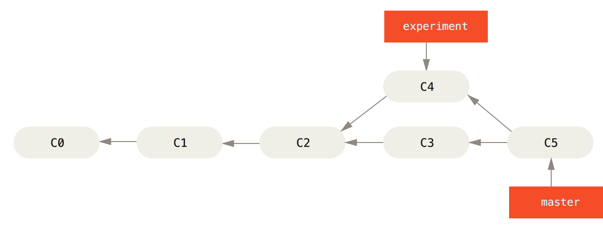

Git Rebase
Melbourne PHP User Group - Aug 2015
Tom Corrigan / @tommygnr
About Me
- Lead Developer at estimateone.com
- Co-Founder of rostercloud.com
- Co-organiser of this very meetup
What is git rebase
According to the docs:
Forward-port local commits to the updated upstream head
What is git rebase really?
Rebase is the alternative(to git merge) way to integrate changes on two branches
We want to take the work in experiment (C4) and add it to master

git merge
git checkout master
git merge experiment

git rebase
git rebase master
git checkout master
git merge experiment

What is it useful for
You have worked on a big feature in your own branch. Meanwhile development work has continued on master. You need to take advantage of some of that work.
git fetch && git rebase origin/master
Interactive rebase
Interactive rebase lets you tidy up, reorder, remove and amend commits
git rebase -i HEAD~5
Amping up Interactive rebase
Do some work/Commit/Do more work, commit/Notice a mistake in the first commit git commit --fixup=HEAD~1
git rebase -i --autosquash HEAD~2
Amping up Interactive rebase
The following can save you a few keystrokes and is extremely safe
git config --global rebase.autoSquash true
Amping up Interactive rebase
Use the below with care: the final stash application after a successful rebase might result in non-trivial conflicts.
git config --global rebase.autoStash true
Further reading
http://pcottle.github.io/learnGitBranching/
Point of View
Press ESC to enter the slide overview.
Hold down alt and click on any element to zoom in on it using zoom.js. Alt + click anywhere to zoom back out.